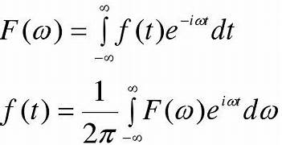
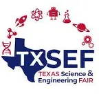

Trilingual Communication
Fluent in English, Spanish, and Turkish, with experience using these languages in academic and competitive settings.
Hello, I'm
Trilingual STEM scholar, aspiring math major, and robotics leader driven by research and competition.

.webp)
Fluent in English, Spanish, and Turkish, with experience using these languages in academic and competitive settings.
Experienced in Python, C++, Java, and SQL, with a strong foundation in computational problem solving and data analysis.
4.0 Del Mar GPA and earned an A in UT Austin OnRamps Precalculus for advanced preparation in college-level math.

Qualified for Texas Science & Engineering Fair with a Fourier transform analysis of heart rates, representing the Coastal Bend region in the mathematics category.
Earned the Naval Science Award at Coastal Bend Regional Science Fair for perseverance and dedication to pursuing science for community welfare.
.webp)
Placed 10th out of 100 competitors in Introduction to Parliamentary Procedures at FBLA State.
.webp)
Placed 1st overall in the Coastal Bend region for SQL at BPA State.
.webp)
Selected for school science and math team; the team finished 2nd in District 29-5A but could not attend regionals due to science fair scheduling conflicts.
.webp)
Served as engineering lead on the robotics team, and the team earned the Perseverance Award from FIRST.
Participated as the materials science specialist, applying research and engineering skills to competitive problems.
Competed as a varsity singles player and contributed to a program that qualified for state every year.
Interested in STEM collaboration, math research, or robotics engineering? Reach out to learn more about my projects and experience.
Coastal Bend Region, Texas
UT Austin OnRamps, Mu Alpha Theta, SNHS